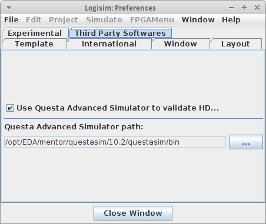

הגדרת Questa Advanced Simulator
אפשר להשתמש בסימולטור מתקדם של Questa כדי לאמת VHDL ישויות, והוא נדרש עבור כל סימולציה באמצעות ישות VHDL.
כברירת מחדל, אימות VHDL עם Questa Advanced Simulator הוא נָכֶה. כדי להפעיל אותו, עליך להיכנס לחלון תפריט, העדפות ולאחר מכן בתוכנות צד שלישי לשונית. לאחר מכן תוכל להפעיל את האימות על ידי לחיצה על השתמש Questa Advanced Simulator לאימות ישויות VHDLתיבת סימון.

ממש מתחת לאפשרות זו, אתה יכול גם להגדיר את הנתיב ל-Questa שלך ספריית התקנת הסימולטור המתקדם. על מנת לעשות זאת, פשוט לחץ על הלחצן עיון... ובחר את המתאים מַדרִיך. אם תפעיל את האימות אך לא תגדיר את הנתיב, תתבקש לבחור בו בפעם הבאה שתתבצע אימות VHDL מתרחשת.
הערה: תתבקש גם להזין את הנתיב אם תעשה זאת נסה להריץ סימולציה של מעגל הכולל ישות VHDL.
הבא: סימולטור VHDL.